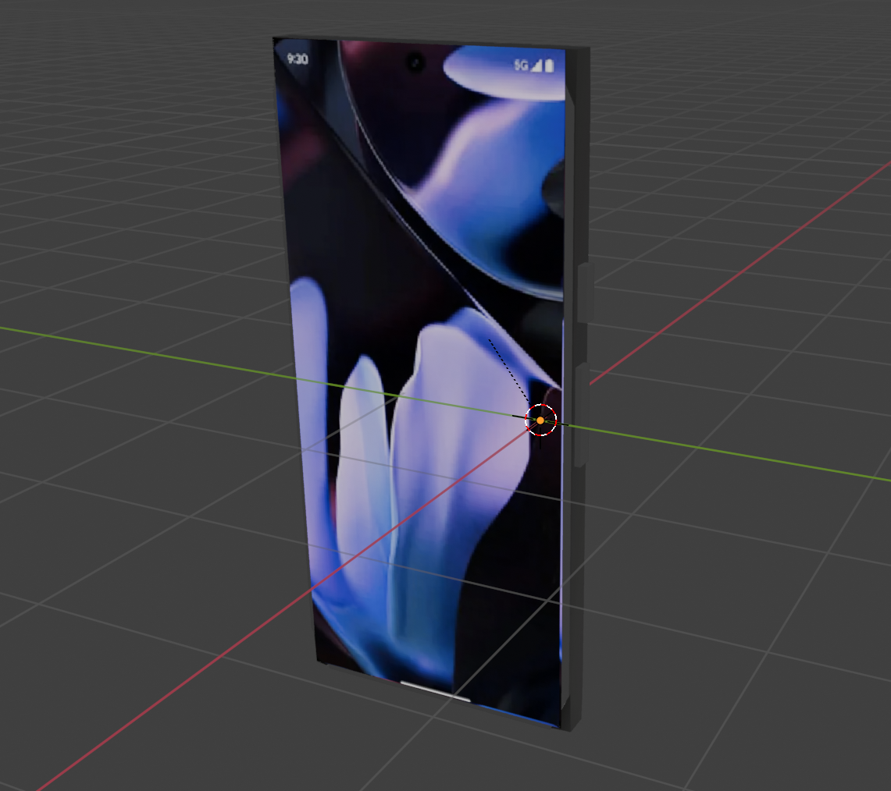

3D Model Construction and Development
The phone model in this application was built using simple geometric shapes in Blender
for simple yet efficient performance. The main body of the phone was created
using a scaled cube material, matching the phone's overall structure and shape. Small cubes and
cylinders were combined to represent the buttons, carefully positioned along
the edges to replicate real phone button placement.
Image textures were applied to the front and back faces of the phone with emission materials to display
screen content and rear design, adding detail while keeping the model lightweight.
Animation and Interaction
All animations in this application are triggered through a single control button,
allowing users to play the full sequence with one click. The animations were
designed to run sequentially, ensuring each movement is demonstrated clearly without
overlapping. This provides a smooth and organized user experience.
Users can also rotate, zoom, and explore the 3D model interactively using mouse or touch controls.
Design Choices
A clean design approach was followed to keep the focus on the 3D model with a sharp interface.
The interface was built using HTML5, CSS3, and JavaScript, with the THREE.js library
powering the 3D rendering. The layout is responsive, ensuring compatibility across various devices,
including desktops, tablets, and smartphones.
Animations and interactions were optimized, allowing users to engage with the model easily.
Shaders, Textures & Optimization
Basic material shaders were used with lighting effects to create a realistic appearance
without heavy computational demands. Image textures were optimized on the phone's surfaces using emissions to
ensure fast loading times while maintaining visual quality.
Geometry was kept simple, using cubes and cylinders to minimize vertex count and enhance
performance, even on devices with lower specifications.
Accessibility Considerations
The application includes keyboard-accessible controls with descriptive labels, making it
usable for individuals who cannot rely on mouse input. High contrast colors are applied
for improved readability.
Alternative text and descriptions are provided for key elements, enhancing compatibility
with screen readers and supporting users with visual impairments.
Modeling Process Screenshots
The screenshots below show the phone models with textures applied in Blender's Material Preview mode:
Model Animation Video
Watch the videos below to see the model movements in action
Deeper Understanding Statement
Throughout the development of this 3D app, I aimed to push the boundaries beyond the tutorial content and explore advanced 3D interactivity and dynamic content delivery. I extended the basic 3D object viewer by integrating user-triggered animations using JavaScript and custom three.js scenes. This allowed me to give users a more immersive experience, where actions like clicking on buttons would trigger animations that change the lighting, camera angle, and even play embedded video content.
While initially focusing on static 3D models, I recognized the importance of optimizing them for performance. I encountered issues with large model file sizes, so I utilized GLTF format for better compression and faster load times. Additionally, I added a responsive design using Bootstrap to ensure the web app functions correcly across different.
Throughout testing, a significant challenge I faced was embedding animations onto the webpage. As each model had multiple animations, only one animation was playing once clicking the buttons. To address this, I combined all animation to playsequentially and adjusted key frames accordingly to ensure that animations do not overlap.
I also integrated Three.js features including changing to wireframe view, toggling spotlight, and adjusting view angle to enhance user experience and improve interaction
In conclusion, the web application not only enhances the user's ability to interact with 3D models but also provides a polished, user-friendly experience with backend support for dynamic content. This project has expanded my technical knowledge, particularly in web development, JavaScript interactivity, and backend integration.